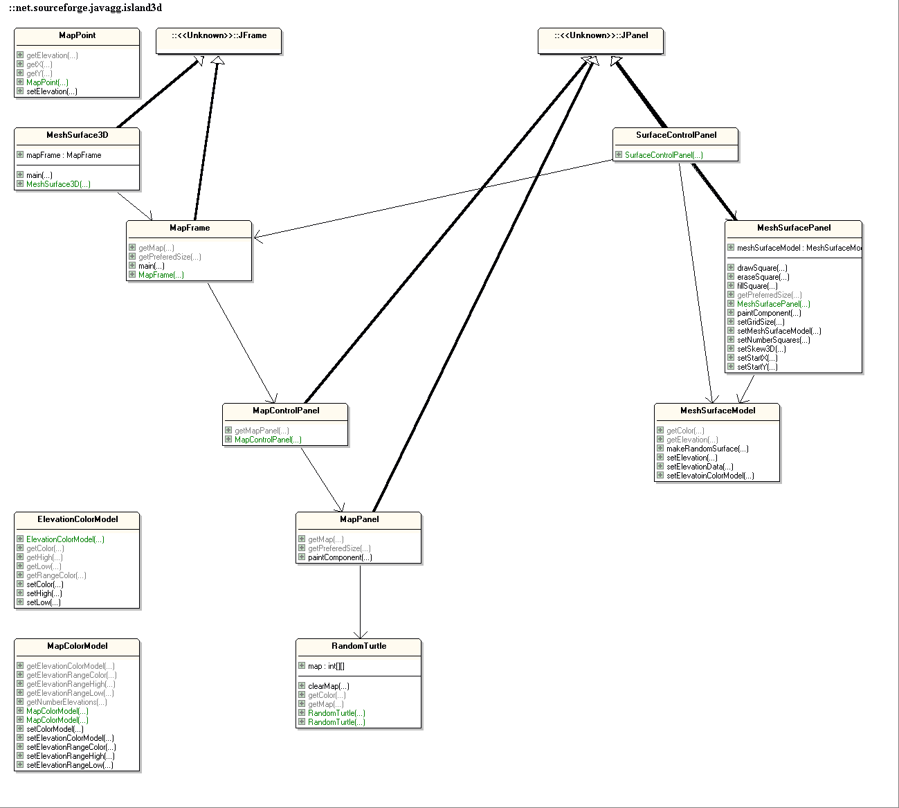
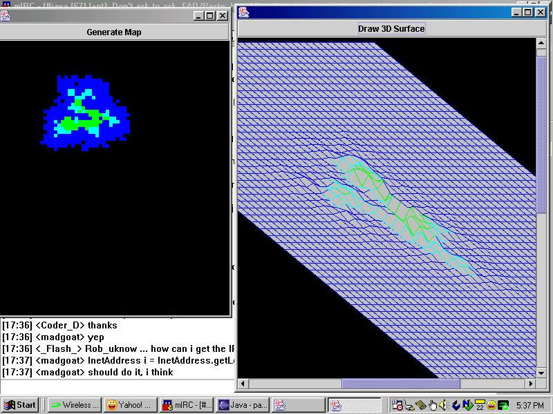

Island 3D is an application which generates a 3D surface model which appears to look like a tropical island or volcanic island. This is an algorithm that
Larry Gray came up with around 1988. It uses recursion in order to build the island 3D map data. And the only math in use is the random method. The surface is merely a graph that is skewed. I elevate points by moving the intersections on the graph in the upward –y direction. This application could be improved greatly. We could have many variables which the user could change to make different types of islands. Even multiple islands.We might want more color layers. And I have a surface smoothing algorithm to implement. We can also save the images to png files for use else where.

